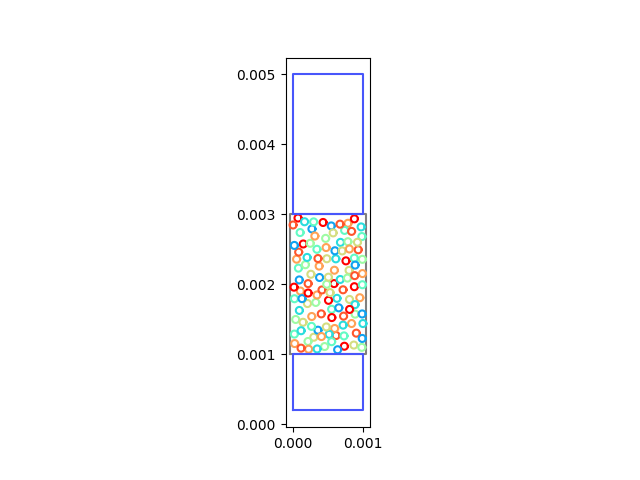
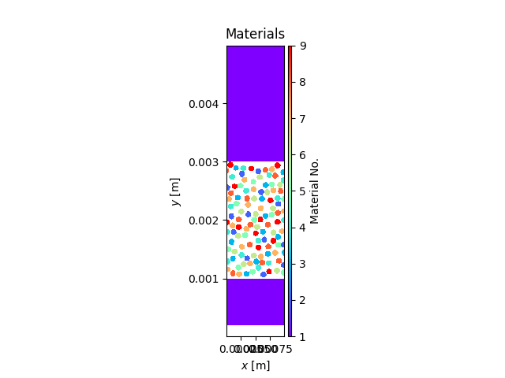

Note
Go to the end to download the full example code.
MesoParticles2D+
This example is based on the iSALE example MesoParticles2D and uses the same basic geometries. However, in this script we demonstrate the versatility of PySALESetup to affect things like the resolution with ease
import pathlib
from PySALESetup import (PySALEObject, PySALEMesh, PySALEDomain,
AsteroidInput, AdditionalInput, TimeStep)
import matplotlib.pyplot as plt
# Create The geometries for the simulation
impactor = PySALEObject([(0., 0.003),
(0.001, 0.003),
(0.001, 0.005),
(0, 0.005)])
impactor.set_material(1)
impactor.set_velocity(0, -500.)
host = PySALEObject([(0, 0.001),
(0.001, 0.001),
(0.001, 0.003),
(0, 0.003)])
host.set_material(0)
back_plate = PySALEObject([(0, 0.0002),
(0.001, 0.0002),
(0.001, 0.001),
(0, 0.001)])
back_plate.set_material(1)
Create a domain object which will perform the particle insertions
domain = PySALEDomain(host)
Create a particle to be used for insertion Its centroid does not matter here as we’ll just move it around anyway, so use [0, 0]
particle = PySALEObject.generate_ellipse([0, 0], 50e-6, 50e-6, 0, 1)
domain.fill_with_random_grains_to_threshold(particle, 40)
/home/runner/work/PySALESetup/PySALESetup/PySALESetup/creation.py:554: UserWarning: Max insertion attempts reached (100). Object can not be placed.
warnings.warn(f'Max insertion attempts '
8.076612363155797e-07
Optimise particle materials so that none touch of the same material
domain.optimise_materials([2, 3, 4, 5, 6, 7, 8, 9])
plot the geometries we’ve created
fig, ax = host.plot()
impactor.plot(ax)
back_plate.plot(ax)
plt.show()
Create the mesh onto which we’ll apply these geometries
mesh_1 = PySALEMesh(50, 250, cell_size=20.e-6)
Apply/project the geometries onto our mesh
mesh_1.project_polygons_onto_mesh([host, impactor, back_plate])
View the result!
mesh_1.plot_materials()
plt.show()
we can also save the meso_m.iSALE file as well if needed We won’t compress it here (although that is recommended) so you can inspect the result and see what it looks like.
mesh_1.save(pathlib.Path('./meso_m.iSALE.gz'), compress=True)
To make life a bit easier this package will also assist in creating the correct iSALE input files required of the simulation. You may still have to merge/edit them yourself until they work, but the bones of the files can be created like the example below.
ast = AsteroidInput('MesoParticles2D+',
TimeStep(4e-10, 1e-8, 4e-6, 1e-7),
mesh_1)
ast.write_to(pathlib.Path('./asteroid.inp'))
add = AdditionalInput(mesh_1,
{i+1: f'matter{i+1}' for i in range(9)},
host_object_number=1)
add.write_to(pathlib.Path('./additional.inp'))
The geometries are mesh-independent so we can easily change the resolution if we wish
mesh_2 = PySALEMesh(50, 250, cell_size=20.e-6)
mesh_2.project_polygons_onto_mesh([host, impactor, back_plate])
mesh_2.plot_materials()
plt.show()
# or... (uncomment to see the result!)
# mesh_3 = PySALEMesh(200, 1000, cell_size=5.e-6)
# mesh_3.project_polygons_onto_mesh([host, impactor, back_plate])
# mesh_3.plot_materials()
# plt.show()
Finally, if we wanted to have particles that appear to extend beyond the mesh, we can do that too! We just need to make the host object slightly wider (here we do it by one radii on each side).
host = PySALEObject([(0-50e-6, 0.001),
(0.001+50e-6, 0.001),
(0.001+50e-6, 0.003),
(0-50e-6, 0.003)])
host.set_material(0)
domain = PySALEDomain(host)
particle = PySALEObject.generate_ellipse([0, 0], 50e-6, 50e-6, 0, 1)
domain.fill_with_random_grains_to_threshold(particle, 40)
domain.optimise_materials([2, 3, 4, 5, 6, 7, 8, 9])
_, ax = host.plot()
impactor.plot(ax)
back_plate.plot(ax)
plt.show()
mesh_4 = PySALEMesh(100, 500, cell_size=10.e-6)
mesh_4.project_polygons_onto_mesh([host, impactor, back_plate])
mesh_4.plot_materials()
plt.show()
- 
- 
Total running time of the script: (0 minutes 4.904 seconds)